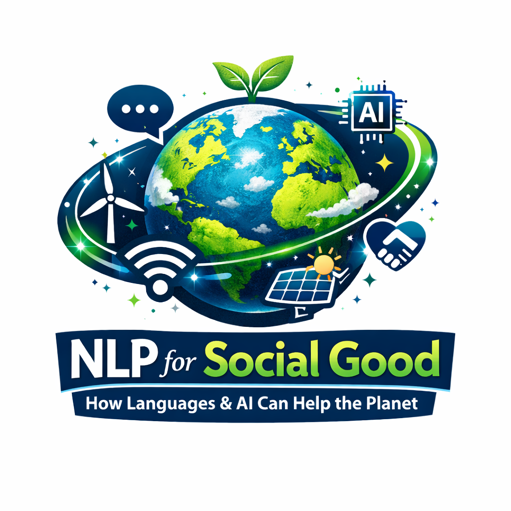
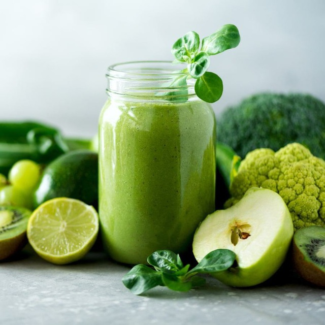
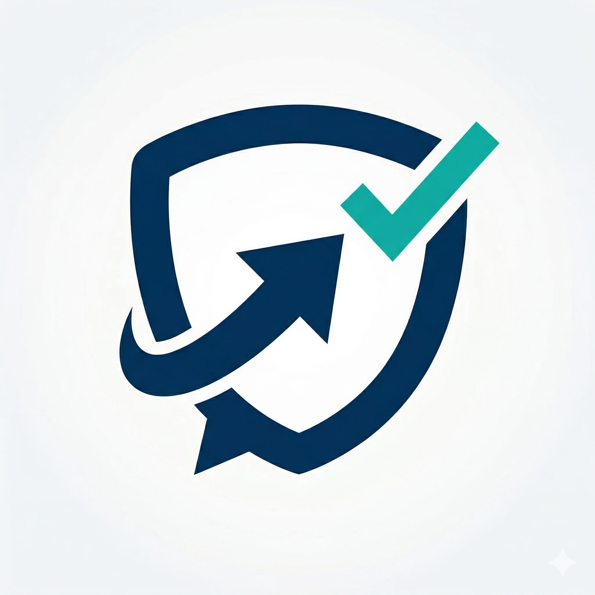
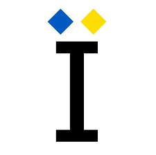
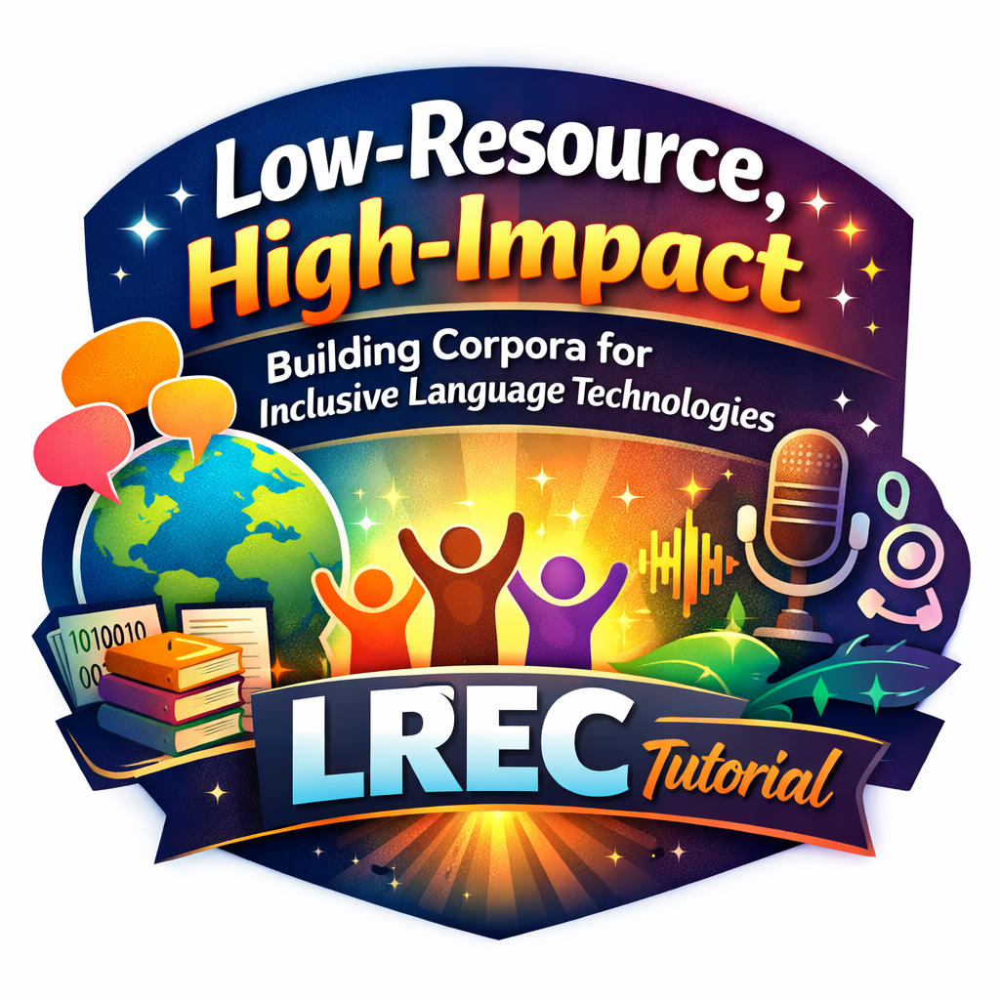

Projects
Research projects, tools, and datasets

NLP4SG: Advancing AI and Language Technologies for Good
A collaborative project on advancing modern language technologies for positive social impact. Our EACL2026 paper provides a comprehensive overview of 9 domains where NLP can contribute for society. Together with that, we have an annual NLP for Positive Impact Workshop at ACL/EMNLP conferences.

TextDetox: Multilingual Text Detoxification
A massive multilingual project (15 lanuguages) on proactive toxic speech mitigation. Over several years, we created multilingual parallel datasets for text style transfer - text detoxification - as well as toxicity classification and explanation datasets and models. It resulted in several publications at EMNLP2021, ACL2022, NAACL2024, and COLING2025. The project was featured as shared tasks at RUSSE2022, CLEF2024, and CLEF2025. The materials have been enormously used by community with >2M downloads.

HatePRISM: Hate Speech Proactive Mitigation
A comprehensive framework examining hate speech regulations across countries, social platform policies, and NLP research datasets. Reveals inconsistencies in hate speech definitions and proposes unified research directions. We also discuss how modern LLMs can be useful in proactive dialogue for hate speech moderation.

UkrDetect: Texts Classification for Ukrainian
As a native Ukrainian speaker, I support my native language closing the gap of data and base NLP models lack. We contributed with several datasets and fine-tuned models for classification tasks: toxicity, formality, NLP, and basic emotions detection. The project was recognised by UNESCO and featured at Language Technologies for All 2025 conference.

Low-Resource NLP
Overall, I support the development of technologies for other underrepresnted language. We organise Limited-resource LLMs shared task @ WMT featuring Ukrainian and Sorbian languages. At LREC2026, we host a hands-on tutorial designed for NLP practitioners working with multilingual projects and low-resource languages. Covers end-to-end pipelines from data collection to models training for building equitable and socially impactful truly multilingual language technologies.